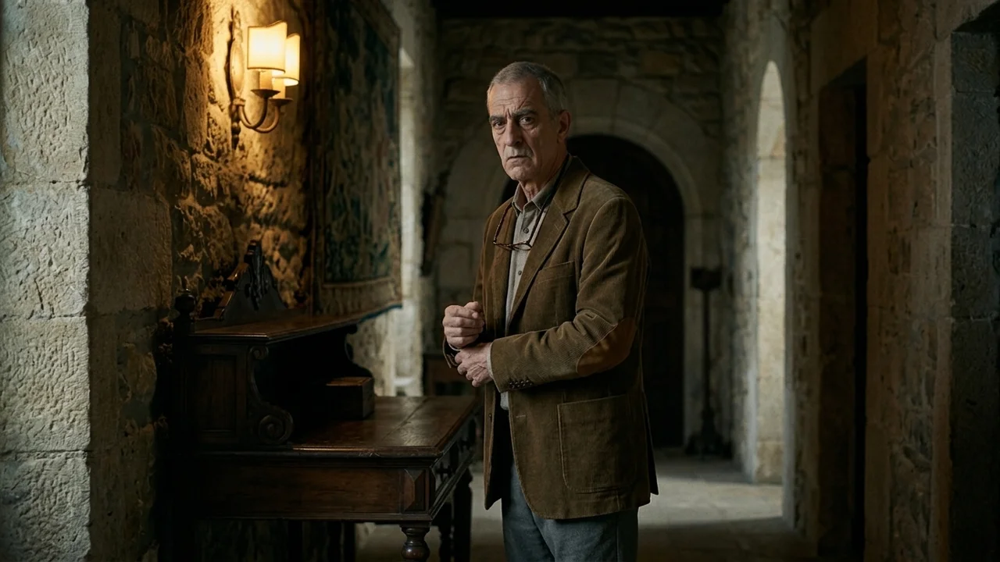
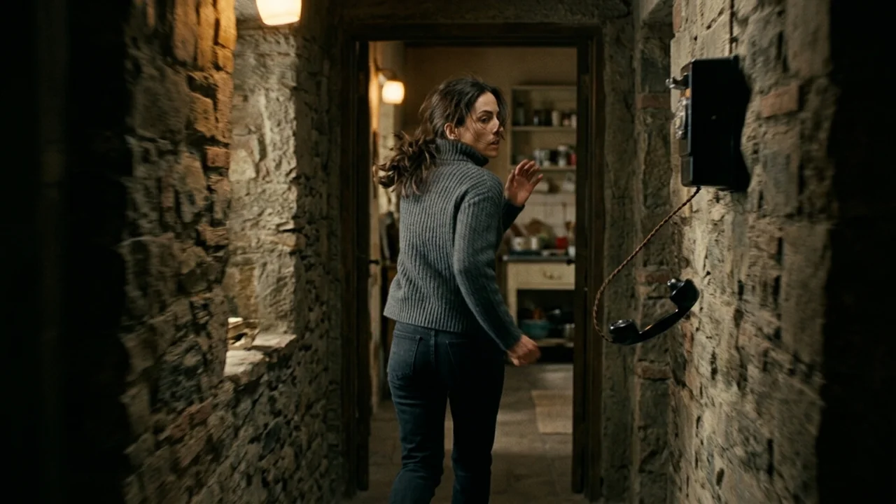
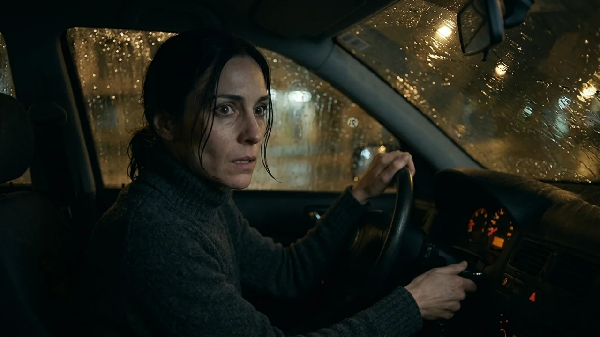
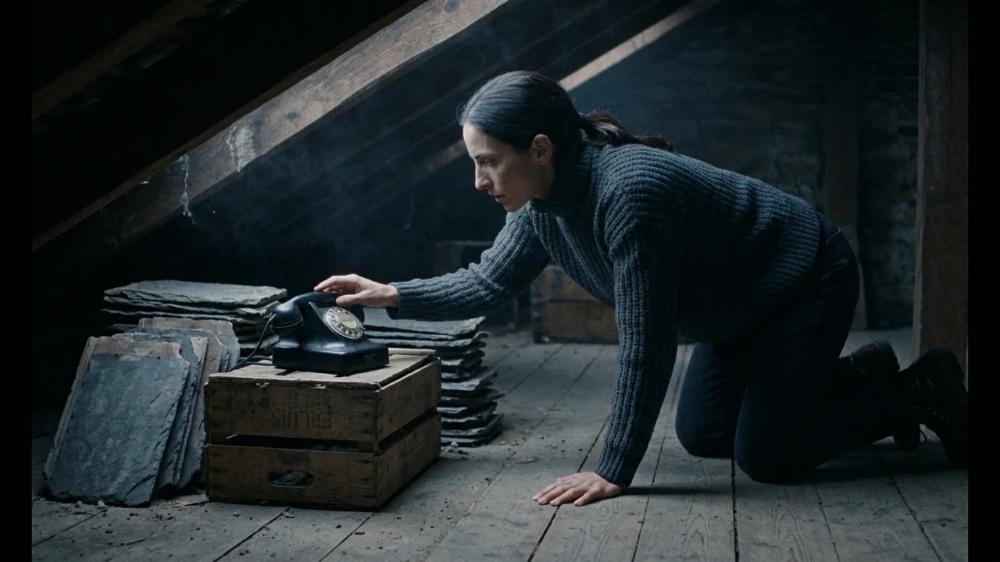
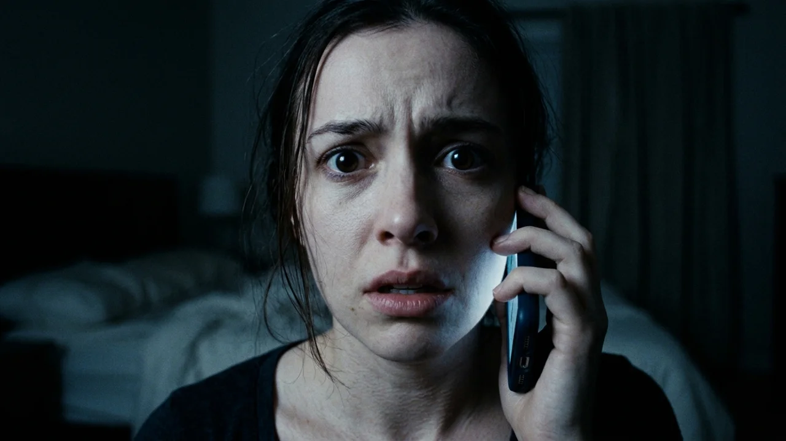

El teléfono de baquelita negra descansaba sobre la consola del recibidor como un fósil olvidado entre dos capas de cera. Tenía el disco de marcar encasquillado en el número cuatro y un cordón de tela trenzada que descendía hasta el rodapié, donde el cable de cobre asomaba decapitado por un corte limpio de tijera.
—La línea se dio de baja cuando murió mi hermano —dijo Ernesto Beltrán mientras se ajustaba los puños de la chaqueta de pana—. En este valle no hay cobertura móvil, pero la radio del salón coge el parte del tiempo si no hay ventisca. La caldera de gasoil se enciende sola a las siete de la tarde. No toque los termostatos de arriba.
Inés Salgado asintió mientras recogía el manojo de llaves de latón. Tras el cierre del estudio de arquitectura de León donde había encadenado contratos temporales durante años, cuidar aquella casa solitaria por mil doscientos euros al mes le parecía un salvavidas.
—¿El desván queda cerrado? —preguntó ella, señalando la trampilla rectangular del techo del pasillo.
Ernesto desvió la mirada hacia la puerta de entrada, donde la lluvia de finales de octubre comenzaba a golpear el cristal.
—Allí solo hay maderas viejas y nidos de rata. La escalera plegable se atasca. Mejor no intente abrirla.
Quince minutos después, el ruido del motor de la furgoneta se extinguió tras la curva del camino forestal. El silencio cayó sobre el caserón con la pesadez de una losa mojada. Inés subió su maleta al dormitorio, colocó sus carpetas de planos sobre el escritorio y bajó a prepararse una infusión.
A las diez en punto de la noche, mientras servía el agua hirviendo en una taza de barro, el timbre mecánico del recibidor estalló con una violencia metálica que la sobresaltó en el acto.
Eran campanadas secas, agudas, repetidas cada tres segundos.
Inés se quedó inmóvil en el pasillo. Miró el cable cercenado en el zócalo. El aparato vibraba sobre la madera de castaño. Se acercó despacio, conteniendo la respiración, y descolgó el auricular.
—¿Diga?
Al otro lado no hubo tono de línea. Solo una respiración densa, fatigada, como la de alguien que intenta llenar los pulmones tras correr contra el frío. Luego sonaron tres golpes secos, sordos y espaciados, como los nudillos de una mano golpeando una tabla maciza.
—¿Quién es? —preguntó Inés—. ¿Señor Beltrán?

La comunicación se interrumpió con un chasquido sordo. La línea quedó muda.
A la mañana siguiente, Inés desmontó la base del teléfono con un destornillador plano. Dentro solo había dos campanas de bronce, la bobina original y un enjambre de cables con aislante reseco que no conducían a ninguna parte. Guardó las herramientas, achacando el timbre a alguna derivación parásita de la instalación eléctrica durante la tormenta.
Sin embargo, a las diez de la noche, con el cielo raso y las estrellas titilando sobre los riscos, el aparato volvió a sonar.
Inés descolgó de inmediato.
—Basta ya —dijo con voz firme—. Si esto es una broma del pueblo, mañana mismo bajo a la Guardia Civil.
—Inés —respondió una voz masculina, rasposa y ahogada por la estática—. La puerta trasera de la cocina sigue abierta. Si no pasas el cerrojo antes de que sople el viento de la vaguada, se va a quebrar el cristal de la alacena.
A Inés se le heló la sangre. Dejó el auricular colgando de su cordón y corrió hacia la cocina. El aire gélido la golpeó al doblar el tabique: la puerta de servicio que daba al patio de la leña, cerrada con picaporte a media tarde, estaba entornada un palmo. La corriente hacía oscilar las hojas de laurel secas colgadas de la viga.
Cerró de golpe, pasó los dos cerrojos de forja y regresó al recibidor. El auricular se balanceaba en el vacío. Al pegarlo a su oído, no había nadie.
Durante la tercera y la cuarta noche, las llamadas se transformaron en un registro minucioso de sus propios actos. La voz masculina volvía puntual a las diez. Le anunciaba que a las diez y tres minutos se le caería una caja de cerillas junto al hogar; a las diez y siete minutos, una ráfaga de hollín caería por el tiro; a las diez y doce minutos, la silla del comedor amanecería desplazada hacia el centro de la estancia.
Todo sucedía con una exactitud intolerable. Inés intentó rebelarse contra los avisos: cuando la voz predijo que derramaría la taza de café matutina, se sentó en el suelo con las manos cruzadas, negándose a tocar la cafetera. Cinco minutos después, una viga del techo crujió con tanta fuerza que el sobresalto la hizo levantarse de golpe, tropezando con el anaquel y arrojando la taza contra las losas.
La casa no adivinaba el futuro; parecía recordarlo.

La sexta noche, el silencio que precedió al repique de las diez fue absoluto. Inés esperaba sentada en el último peldaño de la escalera, con las botas puestas, la linterna encendida entre las piernas y las llaves del coche apretadas en el puño.
El timbre sonó una sola vez.
Ella descolgó antes de que la segunda campanada pudiera completarse.
—Ya me marcho —dijo—. Dejo las llaves sobre la mesa y me voy ahora mismo.
La voz que respondió no era la del hombre rasposo. Era una voz femenina, rota por el llanto, que respiraba entre espasmos de pánico.
—Inés... no mires hacia arriba. Por favor, no mires.
Inés sintió cómo se le erizaba el vello de los brazos bajo el jersey. La voz era idéntica a la suya. No un parecido superficial: reconocía el silbido leve de su tabique nasal al respirar y el quiebro infantil que se le escapaba en la garganta cuando el miedo la desbordaba.
—¿Quién eres? —susurró.
—Soy tú. Estoy en el desván. No subas, Inés. Si despliegas la escalera, la trampilla se trabará por fuera con la cuña. Hay alguien aquí esperando a que entres. Está sentado sobre el baúl del fondo y no respira. Si subes... no volverás a bajar nunca.
Un crujido pesado retumbó justo sobre su coronilla.
Inés alzó la vista despacio. En el techo del pasillo, la moldura de escayola de la trampilla cedió con un golpe seco. Con lentitud agónica, la compuerta osciló hacia abajo, revelando una boca de oscuridad en el maderamen del tejado. Desde el interior brotó un olor denso a alcanfor, madera podrida y polvo de cantería.
Los peldaños plegables se deslizaron hacia el suelo con un rechinido metálico.
Inés soltó el teléfono, agarró su mochila del perchero y salió al porche cerrando la puerta con doble vuelta de llave. El aire de la noche cortaba como cristal. Corrió hacia su coche, metió la llave en el contacto y giró el cilindro.

El motor de arranque emitió un chasquido agónico y murió. La batería estaba completamente vacía; los bornes, al levantar el capó bajo la lluvia helada, aparecieron cubiertos de una pasta blanca de sulfato reciente que no estaba allí dos horas antes.
La casa quedaba a treinta metros a su espalda. En la planta baja, a través de los cristales emplomados, el teléfono de baquelita comenzó a sonar de nuevo.
La distancia hasta la carretera asfaltada era de nueve kilómetros por una trocha de barro impracticable a pie en mitad de la noche, con temperaturas bajo cero. Inés comprendió que no sobreviviría a la caminata a oscuras.
Volvió sobre sus pasos. El timbre repicaba sin descanso. Entró en el pasillo, cerró la puerta con el cerrojo de hierro y se acercó a la consola con la linterna temblando en su mano.
Descolgó.
—¿Qué quieres de mí? —gritó con las lágrimas quemándole los ojos.
—Inés... no salgas al camino —sollozó su propia voz al otro lado del auricular—. El coche no va a arrancar. Estoy sangrando por los dedos de empujar la trampilla. Si te quedas abajo hasta las diez de mañana, vendrán a buscarte... pero si me dejas aquí arriba, moriré de sed a oscuras.
Inés tragó saliva con dificultad.
—Dijiste que no subiera. Dijiste que había alguien en el baúl.
—¡Lo inventé para que no me dejaras sola! —gritó la voz con un alarido desesperado—. ¡No hay nadie! Solo estoy yo... llevo tres días encerrada aquí arriba sin luz y sin agua. Me he quedado sin voz de gritar. Por favor, sube la palanca del pestillo exterior. Solo tienes que empujar la madera.
La comunicación se cortó con tres golpes secos contra una superficie dura.
Inés alzó la linterna hacia la abertura del techo. La escalera plegable descansaba sobre el descansillo de la planta alta. En el tercer peldaño de pino había una huella fresca de barro: la suela de un botín de montaña de la talla treinta y ocho, idéntica al dibujo que ella misma llevaba en los pies.

Subió la escalera peldaño a peldaño. El aire en el desván era tibio y viciado, cargado de un calor estancado que no procedía de la chimenea. Se incorporó esquivando las vigas maestras.
No había ningún baúl.
En el centro del entarimado, iluminada por el haz de su linterna, descubrió una celda improvisada: un colchón de lana sobre el suelo, garrafas de agua vacías y decenas de cuartillas de papel esparcidas en abanico. Se arrodilló sobre una de ellas. Estaban cubiertas de anotaciones escritas a lápiz con su propia caligrafía apresurada: descripciones de lo que había desayunado el martes, las frases exactas que había pronunciado en voz alta en la cocina y listas de horas que concluían siempre a las diez de la noche.
En la última hoja, garabateada con un trazo grueso que había rasgado el papel, se leía:
*«Hoy es veinticuatro de octubre. Si estás leyendo esto desde abajo, no descuelgues cuando vuelva a sonar. La que habla desde aquí ya no eres tú».*
Un zumbido metálico vibró en el rincón más bajo del tejado.
Inés avanzó a gatas bajo las vigas. Entre dos montones de tejas de pizarra descubrió un segundo teléfono, idéntico al de la planta baja, posado sobre una caja de fruta. Un cable negro salía de su base y se incrustaba directamente en la argamasa de la pared de piedra.
El timbre comenzó a sonar entre sus manos.
Inés descolgó con los dedos entumecidos por el pánico. Se llevó el auricular a la oreja.
—¿Inés? —dijo una voz desde el auricular, clara, entera y situada apenas unos metros por debajo de sus pies, en el silencio del pasillo de la planta baja—. ¿Quién anda ahí arriba? Ya he llamado a la Guardia Civil desde la gasolinera. Sal con las manos en alto.
Inés abrió la boca para gritar que estaba allí, que bajaba de inmediato, pero de su garganta solo brotó un quejido ronco, reseco y quebrado, como si llevara días respirando polvo sin probar una gota de agua. Quiso dar un paso hacia la trampilla, pero al volverse vio que la compuerta de madera estaba encajada en su marco, cerrada a plomo desde el exterior y asegurada con una gruesa viga de roble en los herrajes del techo.
Golpeó la madera con los nudillos tres veces.
—¡Estoy aquí! —intentó articular, pero su voz sonó débil, deformada por el eco de las tablas—. ¡Abre! ¡No me dejes aquí!

Al otro lado del auricular, su propia voz del día anterior respondió con un hilo de espanto contenido:
—¿Quién es? ¿Señor Beltrán?
Inés dejó caer el auricular sobre las cuartillas de papel. Los golpes que ella misma propinaba contra la trampilla para salvarse eran los tres golpes que había escuchado sonar en el teléfono la primera noche al llegar.
La Guardia Civil de Riaza localizó el vehículo de Inés Salgado tres semanas después, estacionado en el camino de acceso a la finca con el capó levantado y la batería sulfatada. La vivienda estaba cerrada a cal y canto, con los postigos de madera atrancados por dentro.
Los agentes tuvieron que forzar la cerradura principal con una palanqueta. En el interior no había rastro de desorden ni signos de violencia: la maleta de la muchacha permanecía sobre la cama, sus carpetas de arquitectura estaban ordenadas por fechas sobre el escritorio del salón y en el fregadero reposaba una taza de barro con restos secos de manzanilla.
Al revisar la techumbre en busca de accesos secundarios, el sargento comprobó que la casa carecía de desván: sobre el forjado de escayola del pasillo solo existía una cámara de aire sellada de cuarenta centímetros, rellena de paja vieja y cascotes de yeso intactos desde la construcción del tejado en mil novecientos setenta. No había trampillas, compuertas ni huecos practicables.
En la consola del recibidor, el viejo teléfono de baquelita continuaba desconectado, con el cable cortado a ras del rodapié y una capa uniforme de polvo gris cubriendo el disco de marcar.
El caso quedó archivado como desaparición voluntaria en zona de montaña.
Cuatro meses más tarde, en un piso de alquiler de la calle Santa Engracia de Madrid, una joven arquitecta que acababa de mudarse colocaba sus libros en la estantería del salón. Eran las diez menos cinco de la noche.
Su teléfono móvil, apoyado sobre la mesa de centro con la pantalla boca abajo, vibró tres veces sobre la madera antes de encenderse con una llamada entrante de un número oculto.
La joven descolgó y se llevó el terminal al oído.
Al otro lado no hubo música de espera ni ruido de centralita. Solo una respiración fatigada, tres golpes secos de madera y un susurro ronco que le erizó la nuca:
—Inés... no salgas al pasillo a las diez. Ya he intentado abrir la puerta tres veces.